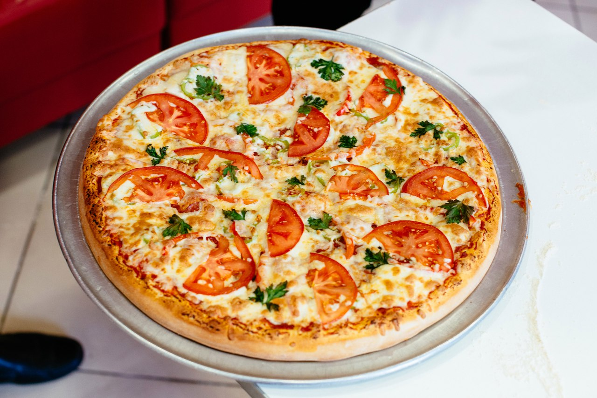
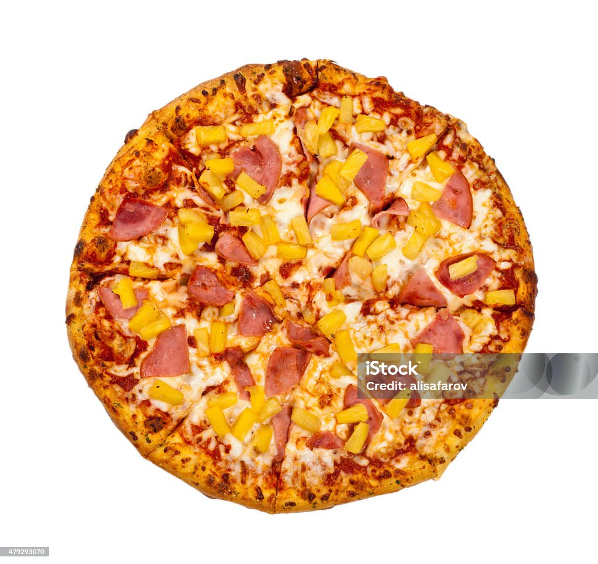
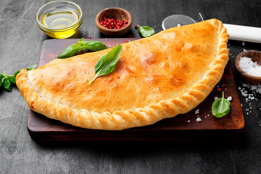
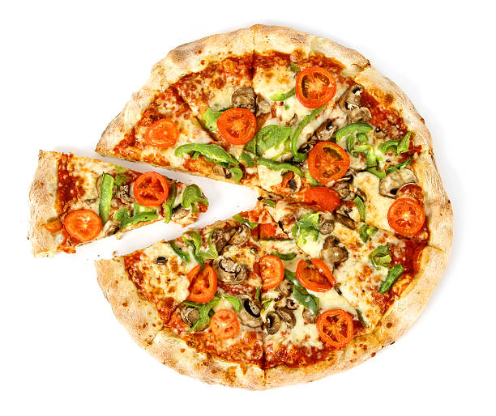

Маргарита
Маргарита — це найпопулярніша піца в світі. Вона названа на честь королеви Італії Маргарити Савойської. Піца складається з тонкого тіста, томатного соусу, моцарелли та базиліка.
Інгредієнти
- Тонко розкатане тісто
- Томатний соус
- Моцарелла
- Базилік
Рецепт
- Приготуйте тісто за вашим улюбленим рецептом.
- Намажте тісто томатним соусом.
- Посипте тісто моцареллою.
- Посипте тісто базиліком.
- Випікайте піцу в духовці при температурі 200 градусів Цельсія протягом 15-20 хвилин.
Історія
Маргарита була вперше приготовлена в Неаполі в 1889 році. Вона була створена в честь королеви Італії Маргарити Савойської, яка відвідувала місто. Піца була названа на честь королеви, а її три кольори — червоний, білий і зелений — символізували три кольори італійського прапора.
Цікаві факти
- Маргарита — це найпопулярніша піца в світі.
- Маргарита була внесена до Книги рекордів Гіннеса як найпопулярніша піца в світі.
- Маргарита — це національна страва Італії.
Калорії
Калорійність піци Маргарита становить близько 2000 калорій на 100 грамів.
Харчова цінність
Піца Маргарита містить в собі велику кількість вуглеводів, білків і жирів. Вона також є хорошим джерелом вітамінів і мінералів, таких як вітамін А, вітамін С, кальцій і залізо.
Відгуки
Піца Маргарита є улюбленою піцою багатьох людей у всьому світі. Вона має простий, але водночас дуже смачний смак.
Пепероні

Пепероні — ще одна популярна піца, яка складається з тонкого тіста, томатного соусу, моцарелли та пепероні.
Гавайська
Гавайська — піца з незвичайним поєднанням смаків. Вона складається з тонкого тіста, томатного соусу, моцарелли, ананаса та шинки.
Кальцоне
Кальцоне — це закрита піца, яка складається з двох шарів тіста, начинених томатним соусом, сиром та іншими інгредієнтами.
Вегетаріанська
Вегетаріанська піца — це ідеальний варіант для тих, хто не їсть м'ясо. Вона може бути з найрізноманітнішими начинками, такими як гриби, овочі, зелень тощо.